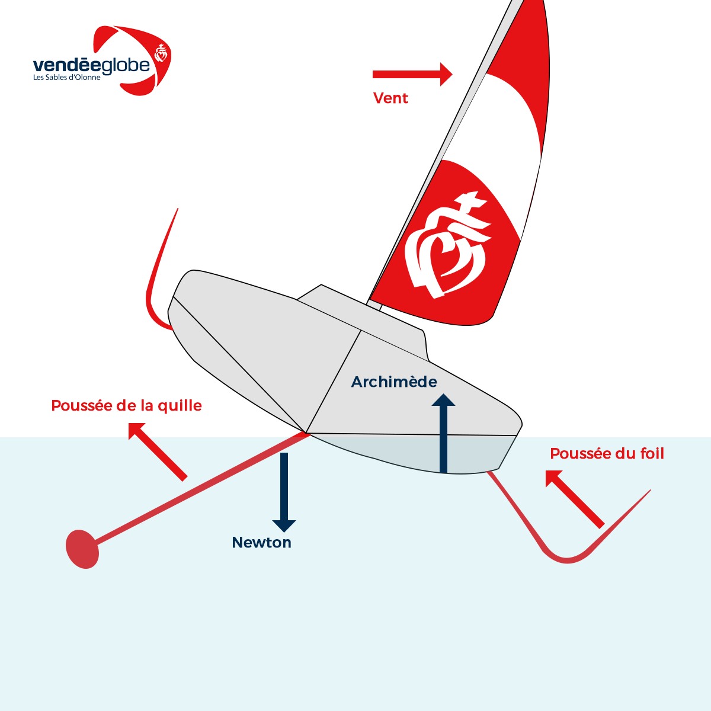

Les voiliers de compétition ne cessent d'évoluer techniquement pour augmenter leurs technologies, resistance, vitesse, poids. Pour augmenter leur vitesse, certains bateaux utilisent des FOIL, une pièce aérodynamique qui permet aux bateaux à voile de voler sur l'eau. La surface de contact du bateau avec l'eau est très mince et cela permet d'augmenter considérablement sa vitesse, ce qui donne un grand avantage. Cette technique peut être utilisée sur tout type de bateaux.

Le foil est une pièce aérodynamique qui permet aux bateaux à voile de voler sur l'eau. Il se compose d'un long tube qui s'étend à l'avant et à l'arrière du bateau et qui est branché à l'arrière par des ailes qui maintiennent le bateau en suspension. Lorsqu'un bateau à voile doté de foils navigue, l'eau qui se trouve entre l'aile et le fond du bateau est repoussée vers le haut. Cette poussée permet au bateau d'accélérer et de dépasser ses concurrents. Les foils offrent également une excellente stabilité, ce qui permet aux bateaux à voile de naviguer plus rapidement et plus facilement. Les foils sont également utilisés pour améliorer la manœuvrabilité des bateaux et leur permettre d'effectuer des virages serrés.
Voici une vidéo qui explique comment fonctionne les foils
Les foils ont tout de même leurs inconvénients. Ils n'ont pas souvent fait bonne impression, car ils se cassent souvent en pleine régatte ceux qui les rend inutilisables pour finir la course.